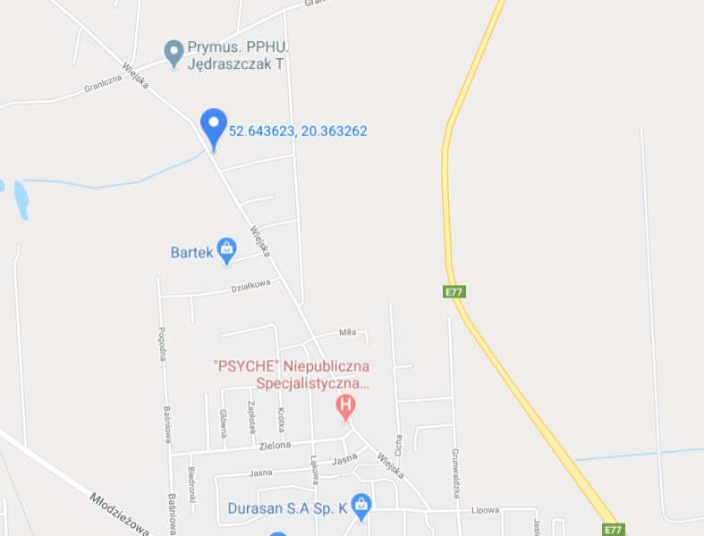

<div style="width: 80%; margin: auto;">
  <div style="width: 70%; margin: auto, auto, auto, 30px; float: left;"></div>
  <div style="float: left; width: 15%;">address: Wiejska 10 Płońsk</div>
</div>
